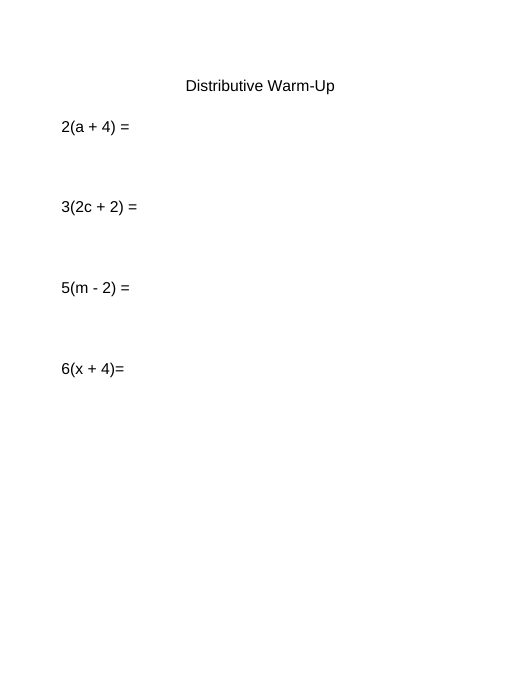
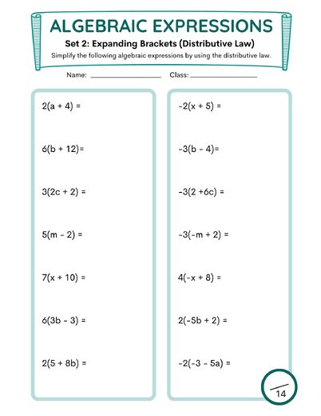
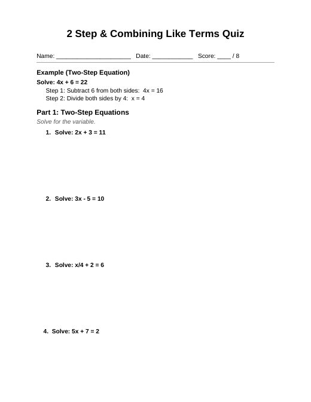

Distributive Property & Substitution
B3_10-20_21LessonPlan.docx
Also in: Block 3 Math/Week 8/Lesson Plans
PA Standards
CC.2.2.7.EE.A.1 (foundational skill per IEP goals): Apply properties of operations, including the distributive property, to expand and simplify linear expressions.
Essential Questions
- How does the distributive property help us simplify an expression?
- How do we substitute a value into an expression and then simplify it?
Objectives
- Students will practice foundational math skills independently via IXL for progress monitoring.
- Students will simplify expressions using the distributive property in a guided warm-up.
- Students will complete their distributive property notes and work through the examples.
- Students will substitute a value into an expression and simplify it using the distributive property during a partner game.
- Students will practice the distributive property on an additional worksheet, with a few problems done together before working independently.
Assessment
- IXL progress-monitoring data
- Warm-up responses (4 questions)
- Completed distributive property notes and examples
- Accuracy shown on whiteboards during the partner dice game (teacher observation)
- Progress on the distributive property practice worksheet
Differentiation
- Timer displayed during IXL to support pacing and predictability
- Warm-up and all notes examples completed together before any independent work
- Partner format for the game allows students to support each other
- Whiteboards give a low-stakes way to show work and make corrections
- Dice game increases engagement and gives students a clear step-by-step routine (roll, substitute, simplify)
- Extra practice worksheet is scaffolded: a few problems done together first, then independent work
- Teacher support available throughout partner and independent work
Classroom Environment & Routines
- Visual schedule and timer displayed on the board during IXL
- Clear verbal and visual cues signal transitions between activities
- Partner expectations reviewed before the game (take turns rolling, check each other's work)
- Game materials (whiteboards, markers, erasers, roll-a-dice boards, dice) distributed efficiently to each pair
Activating Prior Knowledge
- (0-15 min) IXL for progress monitoring, with a timer displayed on the board.
- (15-25 min) Distributive property warm-up: students receive a paper with 4 questions, and the class works through them together.
Materials Needed
- Devices for IXL
- Timer (board)
- Distributive property warm-up paper (4 questions)
- Distributive property notes (started last class)
- For each pair of students: a whiteboard, dry-erase marker, eraser, roll-a-dice board, and dice
- Distributive property extra practice worksheet
Vocabulary
- Distributive property — multiplying a number by each term inside parentheses
- Expression — review
- Substitute — replacing a variable with a given number
- Simplify — writing an expression in its simplest form
Lesson Sequence
- (25-50 min) Finish the distributive property notes started last class. Go through the notes and examples together as a class.
- (50-75 min) Partner game: students get into partners, and each pair receives a whiteboard, marker, eraser, roll-a-dice board, and dice. Students roll the dice, plug the number they land on into the expression, and simplify using the distributive property on their whiteboards.
- (75-90 min) If time allows, hand out a distributive property worksheet for extra practice. Do a few problems together, then let students try on their own.
Closure
- Collect notes and any completed worksheets (the worksheet may be finished in a future class if time runs short).
- Briefly recap the steps of the distributive property.
Show the original document here
Materials from the same week


